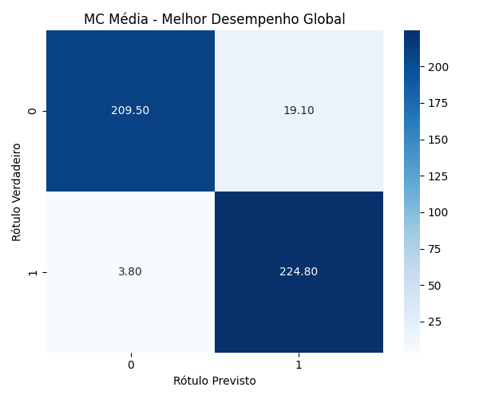
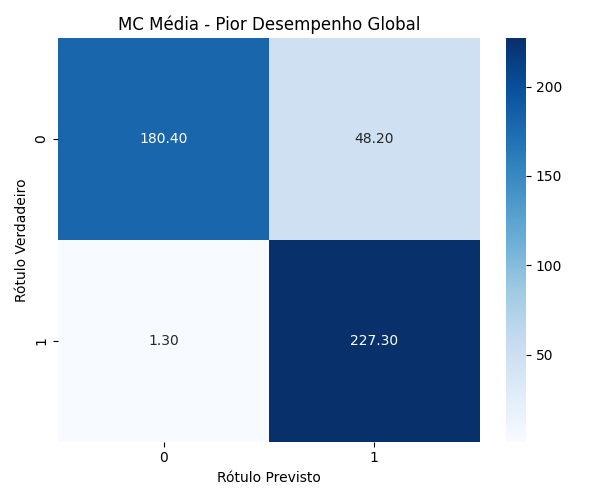

Melhor e pior desempenho considerando todas as combinações de ativação e n_hidden.
| Melhor Desempenho Geral | |
| Ativação | radbas |
| Acurácia Média de Treino | 95.87% ± 0.29% |
| Acurácia Média de Teste | 94.99% ± 1.05% |
| Configuração (n_hidden) | 200 |
| Train time (seconds) | 1.41 ± 0.08 |
| Test time (seconds) | 0.08 ± 0.01 |
|  | |
| Pior Desempenho Geral | |
| Ativação | linear |
| Acurácia Média de Treino | 89.43% ± 0.69% |
| Acurácia Média de Teste | 89.17% ± 1.43% |
| Configuração (n_hidden) | 50 |
| Train time (seconds) | 0.30 ± 0.04 |
| Test time (seconds) | 0.04 ± 0.03 |
|  | |